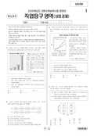

문제지


시험지를 먼저 풀어 보세요. 등급컷·표준점수·난이도는 흐리게 가려 뒀어요.
정답 변경 없음
이의신청 1문항 · 평가원 상세 답변 1문항
이의 요지
본 문항은 농산물 유통 경로의 유형에 대한 이해 능력을 평가하는 문항으로서, 이의 신청에 대한 답변을 드리겠습니다
평가원 답변
먼저 직업탐구 영역 상업 경제 과목에 깊은 관심을 가져 주신 점에 대해 감사 말씀을 드립니다. 본 문항은 농산물 유통 경로의 유형에 대한 이해 능력을 평가하는 문항으로서, 이의 신청에 대한 답변을 드리겠습니다.
첫째, EBS 교재에도 나타나 있는 바와 같이, 도매상은 수집 기관, 중계 기관, 분산 기관으로 분류됩니다. 이것은 특정 도매상이 그 유통 경로에서 어떤 기능을 담당하느냐에 따라 구분하여 놓은 것으로 특정 도매상이 이런 기능을 중복하여 수행하는 경우도 있습니다. 따라서 (가) 유통 경로의 도매상은 중계 기능과 분산 기능을 담당한다는 EBS 시험 해설 강의는 정확한 표현입니다. 다만 유통 경로에 따라 중계 기능의 비중이 더 큰 도매상이 있을 수 있고, 분산 기능의 비중이 더 큰 도매상도 있을 수 있습니다. 이런 이유로 일부 교과서에서 특정 유통 경로 상에 나타난 도매상을 중계 도매상이나 분산 도매상 등으로 구분해 놓기도 한 것입니다.
둘째, 도매상을 수집 기관, 중계 기관, 분산 기관으로 구분하는 것은 특정 유통 경로에서 수집, 중계, 분산 기능을 담당하는 도매상이 발달된 것이라고 보는 것이 옳습니다. 만약 어떤 유통 경로에서 수집 기능이나 분산 기능 등에 특화된 유통 기관이 필요하지 않다면 이런 도매상은 발달되지 않을 것입니다.
셋째, 본 문항의 (가), (나) 두 유통 경로는 농산물의 대표적인 유통 경로로서, ‘소량 생산-소량 소비’ 유통 경로와 ‘소량 생산-대량 소비’ 유통 경로를 나타낸 것입니다. 소량 생산이 이루어지는 농산물의 경우, 수집 기능이 발달될 수밖에 없어 매집상과 같은 수집 기관이 필요하게 됩니다. (가), (나)에 나타난 매집상은 비교적 자본력이 약한 산지 도매상으로 수집, 중계, 분산 기능을 모두 담당하기 어려운 도매상이기 때문에 중계 기능이나 분산 기능을 담당하는 다른 도매상과 거래를 하게 됩니다. 특히, (가) 유통 경로의 도매상은 매집상으로부터 구매한 상품을 소매상(소비자가 접근하기 쉬운 소비지에 입지하고 있으면서 많은 소비자에게 상품을 분산시키는 기능 담당)에게 유통시켜 줍니다. 따라서 (가) 유통 경로에서 도매상은 이런 수집 기관과 분산 기관을 연계시켜 주는 특화된 중계 기관으로서의 역할을 수행하게 되는 것입니다. 이런 맥락에서 ‘소량 생산-소량 소비’를 나타내는 (가) 유통 경로에는 수집 기관, 중계 기관, 분산 기관이 모두 존재하게 됩니다.
이와 같은 이유로 본 문항의 답지 ①번은 옳은 내용에 해당되어 정답이 될 수 없습니다.
원문 표에서 읽어낸 문항만 적었어요. 전체 목록은 아래 답변자료 원문에 있어요.
발행 기관: 한국교육과정평가원(KICE). 파일 위치: 이 사이트가 보관한 사본 · 외부 서버 직접 링크(wdown.ebsi.co.kr). 저작권은 발행 기관에 있습니다. 원본과 다르거나 게시 중단이 필요하면 연락처로 알려 주세요. 등급컷 출처 구분은 데이터 원칙에서 설명합니다.